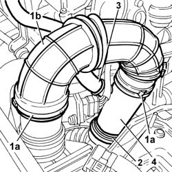
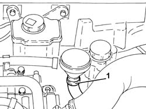
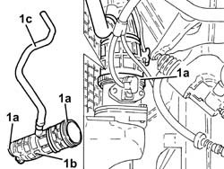

1048a52 air inlet pipe to turbo charger - r + r
- Path
- Procedures > 10 ENGINE > 1048 ENGINE AIR SUPPLY CIRCUIT > 1048A vacuum air circuit > 1048a52 air inlet pipe to turbo charger - r + r
- Kind
- repair procedure (removal / refitting; the operation number is the code)
- Applies to
- engines: 1.9 JTD 8V, 1.9 JTD 16V; all production periods
- Interactive page
- https://sloeber94.github.io/elrnDB-a147/en/#/3025019
Applies to: engines: 1.9 JTD 8V; all production periods
 Removing
Removing
 Refitting
Refitting1. Undo retaining collars (1a) and remove sleeve (1b) from air cleaner to flow meter.
2. Undo the collar securing the rigid section to the air intake sleeve to the turbo.
3. Disconnect the engine oil vapour recovery pipe.
4. Remove the rigid section of the air intake pipe to the turbo.

Applies to: engines: 1.9 JTD 8V; all production periods
Refitting
RemovingFit the rigid section of the air intake pipe to the turbo.
Do up the retaining band of the rigid section to the air intake sleeve to the turbo.
Connect the engine oil vapour recovery pipe.
Fit the connection sleeve between air cleaner and flow meter.
Do up the collars securing the pipe to the flow meter and the rigid air intake pipe to the turbo.
Applies to: engines: 1.9 JTD 16V; all production periods
Removing
RefittingProceed with removal 7025A12 Engine front sound insulation COVER - R.R. .
Proceed with removal 7025A14 Bonnet LID - R.R. .
Proceed with removal 1016A10 sound-proofing cover - r + r .
Proceed with removal 5530B10 battery - r+r .
Proceed with removal 5530B52 Battery DRIP TRAY/SUPPORT - R.R. .
1. Loosen the band and disconnect the oil vapour recirculation pipe from the separator.

Applies to: engines: 1.9 JTD 16V; all production periods
1. Loosen the bands (1a) and remove turbocharger air intake pipe (1b) complete with oil vapour recirculation pipe (1c) after having released it from the vacuum pipes.

Applies to: engines: 1.9 JTD 16V; all production periods
Refitting
RemovingPlace the turbocharger air inlet pipe complete with oil vapour recirculation pipe in its housing and secure it using the bands.
Connect the oil vapour recirculation pipe to the separator and tighten the band.
Proceed with refitting 5530B52 Battery DRIP TRAY/SUPPORT - R.R. .
Proceed with refitting 5530B10 battery - r+r .
Proceed with refitting 1016A10 sound-proofing cover - r + r .
Proceed with refitting 7025A14 Bonnet LID - R.R. .
Proceed with refitting 7025A12 Engine front sound insulation COVER - R.R. .